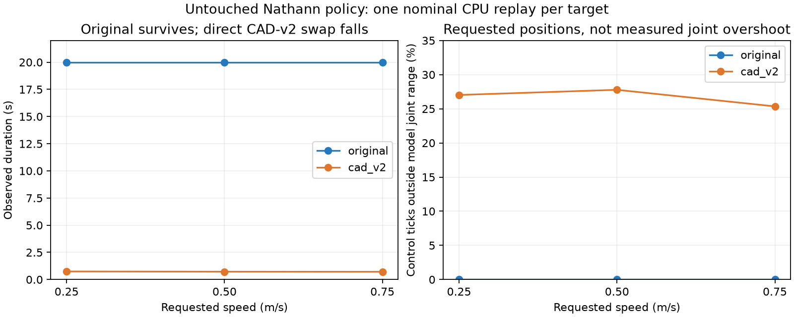

Nathann's original 180M-step joystick policy, without training. Original weights, normalization, gait decoder and motor delay are retained. Both models are free in 3D.
Each column has side and oblique views. On CAD-v2, blue identifies the left foot and orange the right; the original model's foot meshes retain their dark appearance. The CAD-v2 pose freezes at the first fall and is labelled accordingly; it is not balancing in that pose. Use quarter speed to inspect the short failure.
These are one deterministic nominal trial per condition, not robustness statistics. Commands of 0.25 / 0.50 / 0.75 m/s do not imply those speeds were achieved. Clamping and reset-offset diagnostic variants also fell within 0.71–0.75 s.
Protocol, results and interpretation · Raw metrics · Report home

Original: survives 20 s; mean world-X speed 0.52 m/s. CAD-v2: falls at 0.74 s. Left column: original. Right: CAD-v2.
Original: survives 20 s; mean world-X speed 0.59 m/s. CAD-v2: falls at 0.72 s. Left column: original. Right: CAD-v2.
Original: survives 20 s; mean world-X speed 0.65 m/s. CAD-v2: falls at 0.71 s. Left column: original. Right: CAD-v2.